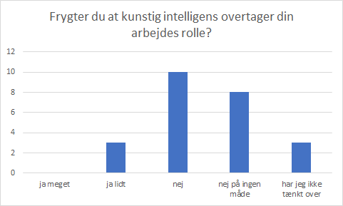

Vi har lavet en undersøgelse via vores spørgeskema. På den måde har vi fået fat i folk, og hørt deres tanker/mening om kunstig intelligens i erhvervslivet.
Som vi ser på statistikken ovenfor. Så har alle 24 vi har spurgt sagt ja, til de ved hvad kunstig intelligens er.
Som vi ser på statistikken ovenfor. Så har 12 personer altså 50% af dem vi har spurgt, kunstig intelligens på deres arbejdesplads.
 Som vi ser på statistikken ovenfor. Så har 3 sagt ja lidt til at de frygter, at miste deres job til kunstig intelligens. 10 har sagt nej, 8 siger at de på ingen måde frygter det. Hvorimod at 3 ikke har tænkt over det.
Eksempler på hvad folk vil gøre for ikke at miste deres job til kunstig intelligens:
Business Intelligence - I langt de fleste tilfælde, vil kunstig intelligens ikke frarøve os vores arbejde, men derimod udvikle den måde vi arbejder på. F.eks. med beslutningstagen i virksomheden, kan kunstig intelligens anvendes til at analysere data og foreslå den korrekte/bedste handling. (præskriptiv analyse) F.eks. kan algoritmer udregne præcis hvor mange penge en virksomhed skal bruge på reklamer, fordelt på TV, radio, sociale medier, for at få det største afkast. Dette overtager en del af analytikerens arbejde, men giver derved også mere tid til at handle på information, og at tage beslutninger, hvor man før brugte meget tid på at lave analyserne. Langt hen ad vejen vil kunstig intelligens derfor lette på arbejdsopgaver, og lade os arbejde mere effektivt.
Pædagogisk Assistent elev - Tror ikke kunstig intelligens kan være omsorgsfulde.
Erhvervsøkonom - Kunstig intelligens er på nuværende tidspunkt, og de næste mange årtier, på ingen måde en trussel for erhvervslivet. Det er nærmere et nyttigt værktøj til at håndtere store beregningsmæssige opgaver, udført en automatiseret og streamlinet måde.
Nogen har den holdning til at de tage nogle kurser eller efter uddannelse for at prøve på at være på samme nieavu som den kunstig intelligens.